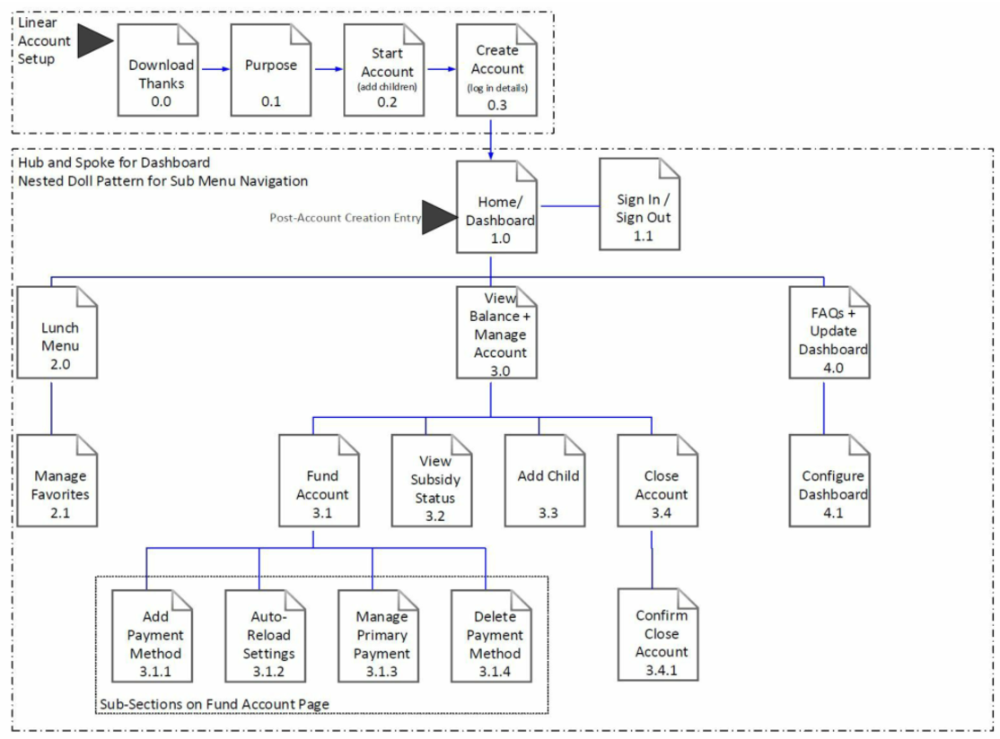
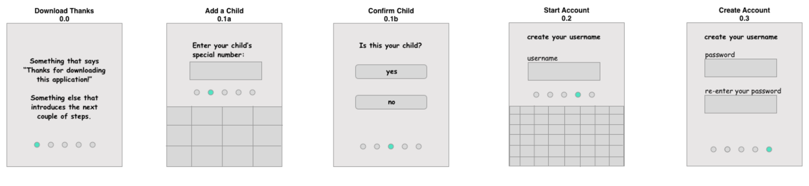
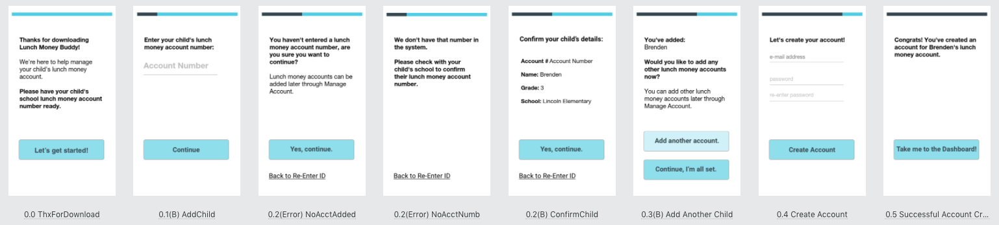

mobile application design
MK Designs was tasked to help solve the problem of creating a lunch money application to help parents and guardians manage their child's lunch money account.
challenge
The Lunch Money Buddy App needed to support:
- Signing up for an account using a code provided by the child's school.
- Viewing the account balance and funding the account, including adding one or more payment methods and the ability to setup auto-replenishment.
- Viewing each child's lunch menu and marking a lunch as a favorite.
- Confirming the child's subsidy status.
- Managing the child’s list of favorite lunches.
- Closing the account when appropriate.
actions
As principal designer on the project, I needed to understand the expectations of the potential users, not only against the app specifications, but also unspoken user wants and needs.
I started with 2 provided personas:
- “Sam & Jorge” - fairly tech savvy parents of Brenden and Hailee.
- “Henry” - non-tech savvy guardian of Joe.
And to ensure I kept the needs of the users front and center, I followed my plan to:
- Story map to explore each persona's possible app-usage motivations and several scenarios they may face while using the app.
- Mind map to explore the app's organization and start creation of a sitemap to explore the workflows and start thinking about the navigation.
- Tree test using Treejack to test assumptions about the app's sitemap & organization - the feedback that I got from this initial user testing meant that I’d have to be specific about in-app navigation to ensure that my wayfinding points were obvious, but that I was clear to proceed with a hybrid organization scheme with both hub and spoke and nested doll organization elements.
- Update the sitemap based on the tree testing results.
- Start the app design process by sketching wireframes to quickly iterate on content location and type.
- Solicit the first round of peer-review feedback.
- Iterate on the first round of lo-fi wireframes based on feedback & continue to improve the wireframes.
- Start prototyping based on the lo-fi wireframes.
- Solicit the second round of peer-review feedback.
- Iterate on the wireframes and newly created prototype based on feedback.
- The best feedback that I got really challenged me to think about adding meta-navigation for the app - so I added a main hamburger menu that included some historical information like lunch purchases and funding, FAQs, and a way to Sign Out of the app. In addition, I added a lower tabbed nav / menu bar to allow users to easily determine where they were in the application and then navigate to a new spot, if necessary.
results
I started by spending time with the personas (“Sam & Jorge” and “Henry”) and created storyboards to explore several of the each persona's possible app-usage motivations and then followed the action plan listed above. In the interest of space, the following steps focus on the onboarding - to show the child + user focus.
Child-Focused
I went from this storyboard section where I started to explore what one set of the personas (Sam & Jorge) would want when adding a child, or children, to the application.
I wanted the app to focus on the children and create an easy onboarding system. By asking for the child’s special access code that they would have been given by the school, I put the children first - instead of first creating a parental account and then adding the children. I wanted the app to be easy to use from the beginning, and so even from the download screen, I knew I wanted to instruct parents / guardians that they would need the access code first, before they could create an account.
Sitemap
I knew it would be important to create an outline of how the information was going to be organized, so after storyboarding, I moved to creation of a sitemap.
From the storyboarding process, I knew a little bit about how my personas might use the product and how they might expect the information to be organized in the app… but I wasn’t sure exactly what design models would make the most sense, so I performed a mind mapping exercise to explore different organization structures. I decided on the following sitemap that has a linear account setup, hub and spoke design pattern radiating from the dashboard, and then a nested doll pattern for the sub menu navigation. 
v1 Wireframes
From the sitemap, it was time to get some wireframes created, and the following show the first iteration of the linear setup process. This was my first pass at creating a public-facing onboarding, and I wanted to keep the focus on the child that was being added to the tool, so I asked for that information first.
After this first draft of wireframes, it was time for some design-specific feedback, and my design team was helpful pointing out where I could update wording or improve the process (not only on the section below, but also on the other drafted wireframes.
v2 Wireframes
The second iteration of wireframes led to this annotated wireframe selection - knew it would be important to confirm that a user had entered the correct child, so I added some validation and some error messages around possible incorrect entries- this way the user wouldn’t get too far into the process and then be unable to continue if they had the wrong account number.
Using Sketch,I started focusing on a feel for the application, using the friendly and informative mailchimp communication style and creating wireframes that displayed larger numbers so that if a user had visibility limitations, they’d be able to see the number that they were entering. I moved the completion bubbles to the top of the page where the user would be able to tell how far along they were in the process at the top of the screen so they weren’t wondering how much more they had to do in order to finish the signup process.
Prototyping Begins
It was important that I didn’t spend an exorbitant amount of time on lo-fi wireframes, I needed to start prototyping so that I could get some feedback from my design teams. I was able to take my design assets from Sketch and import them into Proto.io where I started working on a clickable flow between static screens.
Feedback + More Iterations
Once I had all my screens in place, it was time for more feedback and additional iteration. I was able to focus on improving the onboarding experience and creating a clickable prototype for v2, where I have the option to add 2 children during first time setup and another child using a secondary workflow from the Manage Account screens.
The following shows the screens from the latest iteration in my Lunch Money Buddy mobile app. I’m still focused on creating a child-first design, but I believe I’ve also created a friendly and accessible mobile app that is easy to use and understand, regardless of a user’s mobile experience.
lessons learned
During the app design process, I learned several important lessons:
- testing is invaluable
- When I first heard about the project, I started to write down all the ways I would solve it:
sketches, workflows, and a couple of wireframes. I knew from previous projects that testing
with actual users is priceless, and should be done at every step of the process… at least as
much as can be fit into the time and budget crunch of all software projects. One thing that I
didn’t think about prior to this project, was how the different types of testing could fit so
well into a project. This plays into the second important lesson I learned as part of the app
design process, but it’s important to put this here as well: there’s a type of user testing for
all stages in the app design process.
- I thought my ideas were pretty solid for the sitemap, but how could I claim to put the
user’s needs first if I didn’t spend time with users asking if what I was proposing
made sense?
So, I spent a little extra time in the first stages of the design to source some parents and guardians who have spent time managing lunches and lunch money and ask them about my ideas and if they made sense, or if some organizational changes needed to be made.
- I didn’t make any changes to my sitemap before starting with wireframe design, but because of my tree testing, I knew that wayfinding would be important in the application and that’s why I was so excited about the design reviews to get feedback on my first iteration of my wireframed way finding. Which leads me to how important design reviews are….
- I thought my ideas were pretty solid for the sitemap, but how could I claim to put the
user’s needs first if I didn’t spend time with users asking if what I was proposing
made sense?
- design reviews are super-helpful
- Regardless of how much you like your design and think it’s pretty much perfect, it can still be
improved. Design reviews are important! I knew that my design still needed work, and I
asked pointed questions about the design and requested specific feedback around my wayfinding
when it was time for peer-review.
- In addition to design reviews being important, it’s also important to know that asking
for help is OK. I had a couple of ideas on navigation and wayfinding in the
mobile app, but I was stuck on the initial idea of breadcrumbs because I like the
organization and how they serve the need for wayfinding in desktop apps and websites.
I knew that if I were to implement breadcrumbs, they’d work OK, but I felt that there was a better solution - and when I asked for help around this specific item, the team was there to help with ideas.
- Thankfully, I was able to move away from the ill-serving breadcrumb idea and into something more mobile specific. While I’ll remember the feeling of being stuck because I’m over-weighing all my options, the lesson of it being OK to ask for help when I’m stuck in analysis paralysis will keep me moving forward.
- In addition to design reviews being important, it’s also important to know that asking
for help is OK. I had a couple of ideas on navigation and wayfinding in the
mobile app, but I was stuck on the initial idea of breadcrumbs because I like the
organization and how they serve the need for wayfinding in desktop apps and websites.
This was my first time digitally designing a mobile app, and while I didn’t follow any design patterns for Apple or Material Design, I discovered how many resources and sets of best practices there are available. And unlike my experience with learning about resources at the last minute, I know that these exist, so that when I’m tasked to create a platform specific app, I’ll know what and where my resources are.
Tool Review
I was also able to take advantage of several new-to-me tools during this app design process as well:
- This was my first time using Sketch, the Mac-based UI / UX / digital design tool. I knew when
I started using it that it had the potential to be an amazing tool; however, I didn’t know when
I started out that the amazing-ness potential is due to the number of plugins and, integrations
with Sketch.
Not knowing about these plugins caused a bit of distress when I attempted to import my wireframes into Proto.io the first time because nothing was lining up exactly the way I had designed it.
- Proto.io is a web-based prototyping software that is pretty powerful in its own right - might
be OK for UI design on its own, but it’s super power seems to come out when it’s combined with
Sketch (or another digital design tool) for asset creation and then importation of those assets
into Proto.io for mid-to-hi-fi mockups.
This project didn’t require hi-fi mockups, but if it did, I’m sure the combo of Sketch and Proto.io would yield amazing results.